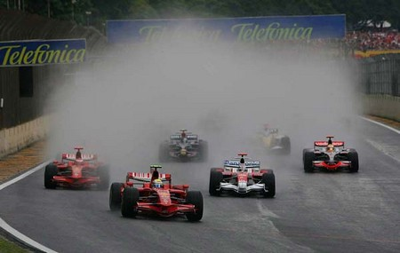
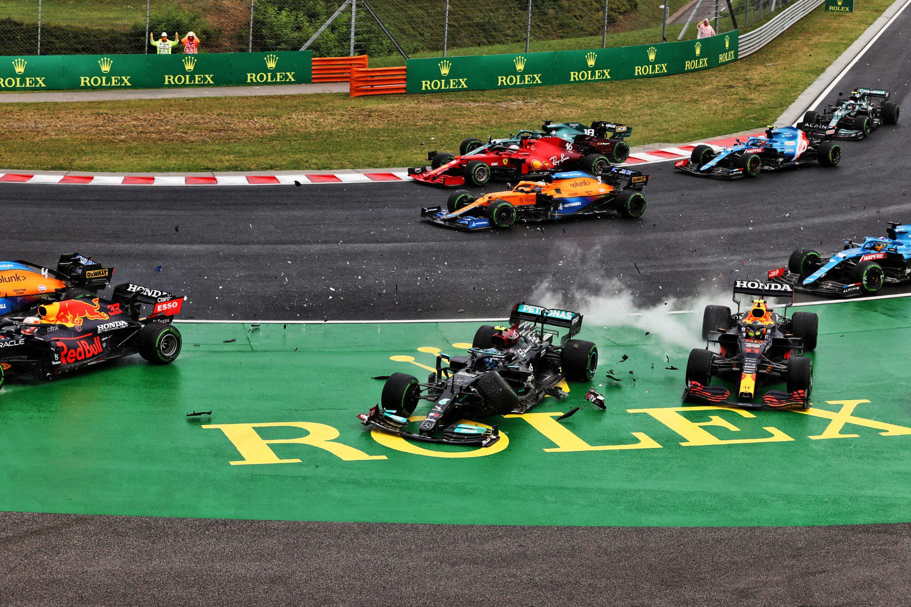

Top 3 corridas
Corrida 1: GP do Japão - 2005
O Grande Prêmio do Japão realizado em Suzuka em 9 de outubro de 2005, foi a décima oitava etapa do campeonato, foi vencido pelo finlandês Kimi Räikkönen, da McLaren-Mercedes, que subiu ao pódio ladeado por
Giancarlo Fisichella e Fernando Alonso, pilotos da equipe Renault. Essa foi uma corrida em especial se destaca o gp do Japão de 2005 foi uma corrida que colocou a prova todo o Grid e o final desse tacou conquistando uma vitória aqui para muitos era Improvável. vamos relembrar como foi a emocionante corrida.
Corrida 2: GP do Brasil - 2008

O Grande Prêmio do Brasil de 2008 (formalmente XXXVII Grande Prêmio do Brasil) foi uma etapa da Fórmula 1, realizada em 2 de novembro de 2008, no Autódromo José Carlos Pace, em São Paulo, Brasil. Foi a décima oitava e última corrida do Campeonato Mundial de Fórmula 1 de 2008. A corrida de 71 voltas foi vencida pelo piloto da Ferrari Felipe Massa, que largou na pole position. Fernando Alonso, da Renault, terminou em segundo lugar e Kimi Räikkönen, também da Ferrari, terminou em terceiro lugar.
Na largada, Felipe Massa iniciou ao lado de Jarno Trulli, da Toyota. Kimi Räikkönen iniciou no terceiro lugar, ao lado do piloto da McLaren Lewis Hamilton. A chuva começou minutos antes da corrida, o que atrasou o início. Quando a pista estava seca, foi dada a largada e Massa estabeleceu uma vantagem de alguns segundos. A chuva retornou nas últimas voltas, mas a corrida foi encerrada com a vitória de Massa. Sebastian Vettel da Toro Rosso terminou em quarto lugar, atrás de Alonso e Räikkönen. Lewis Hamilton ultrapassou Timo Glock da Toyota nas últimas curvas para terminar em quinto, garantindo o título de campeão da temporada.
Hamilton recebeu elogios de várias pessoas influentes, incluindo os ex-campeões Damon Hill e Michael Schumacher. O piloto da McLaren também recebeu as congratulações da Rainha Elizabeth II e do primeiro-ministro do Reino Unido Gordon Brown. A vitória de Massa e o terceiro lugar de Räikkönen também fizeram com que a Ferrari vencesse o campeonato de construtores. O grande prêmio também foi a última corrida do escocês David Coulthard, que se aposentou após 246 corridas.
Corrida 3: GP da Hungria - 2021

O Grande Prêmio da Hungria de 2021 (formalmente denominado Formula 1 Magyar Nagydíj 2021) foi a décima primeira etapa da temporada de 2021 da Fórmula 1. Foi disputado em 1 de agosto de 2021 no Hungaroring, em Budapeste, Hungria.Nela o francês, Esteban Ocon conquistou sua primeira vitória na Fórmula 1, se tornando o 111º piloto a vencer na história na categoria. Ocon foi o primeiro francês a vencer em um carro francês com motor francês o que não acontecia desde a vitória de Alain Prost pela Renault no Grande Prêmio da Áustria de 1983. Foi também a primeira vitória da equipe Alpine na Fórmula 1. A equipe sediada em Enstone agora venceu com 4 nomes diferentes, os outros sendo Benetton, Renault e Lotus.
Durante a corrida, pela primeira vez na história da Fórmula 1, ocorreu uma largada somente com um carro. Após um acidente envolvendo diversos pilotos, Lewis Hamilton acabou largando sozinho no grid da segunda largada, enquanto os seus rivais, largaram do box.
Página principal
.jpg)